Just so we're upfront about it
We're not going to tell you NijiScan is the best scanning app out there — there are bigger apps, from bigger teams, with bigger feature lists. What we can tell you is that it's built to cover the everyday scanning jobs people actually run into: receipts, notes, forms, books, IDs — scanned cleanly, organized sensibly, and kept on your device.
This is still an early, independently-built app, and it'll keep getting better from here. If something's missing or clunky, that's useful to know — feedback on features is genuinely welcome, not just a line we're putting on a website.
No watermarks on your exports. Scanning, organizing and sharing are free. A few extra tools can be unlocked for free by watching a short ad, and Pro, a one-time purchase, removes ads and unlocks everything for good. If you'd like to help keep the app maintained and growing, buying Pro is also the simplest way to do that.
What it does
Everything you need to turn paper into a usable file
A quick look at the core workflow — from pointing your camera at a page to ending up with an organized, exportable document.
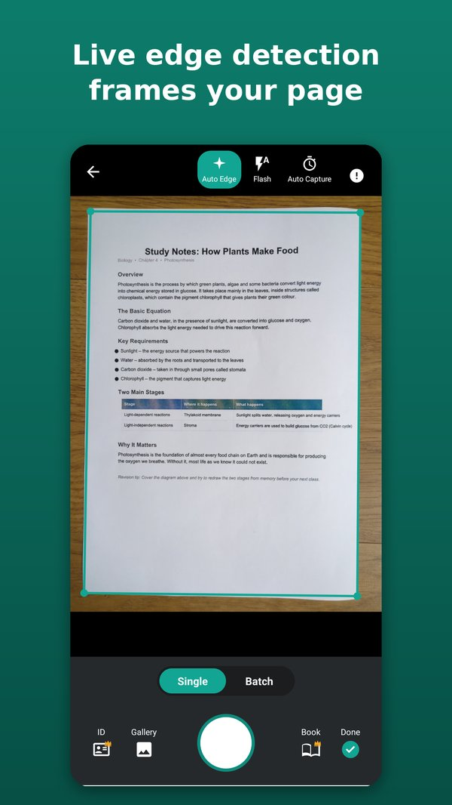
Scan with auto-crop and edge detection
Point your camera at a page and NijiScan detects the edges, straightens the perspective, and cleans it up automatically. Multi-page documents and book mode are both supported for when you're scanning more than a single flat sheet.
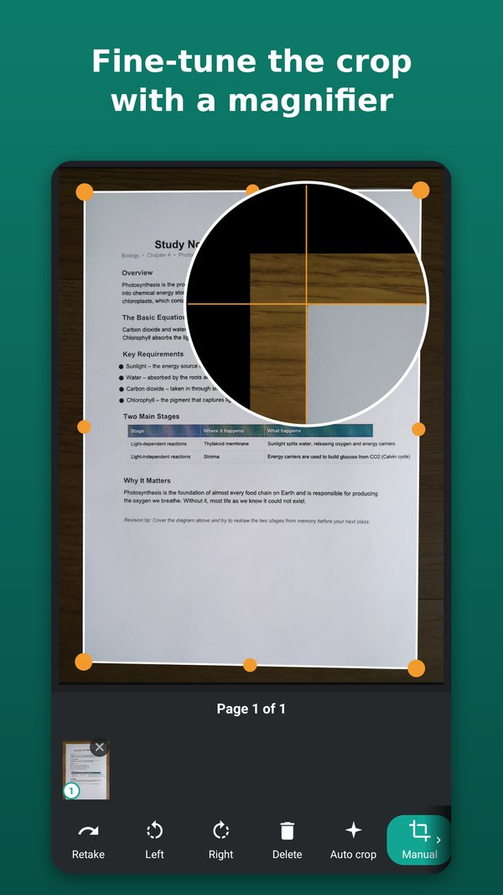
Fine-tune the crop with a magnifier
Drag a corner and a magnifier shows exactly where the edge sits, so nothing at the edge of the page gets cut off. Auto crop, manual crop or no crop at all — it's your choice for each page.
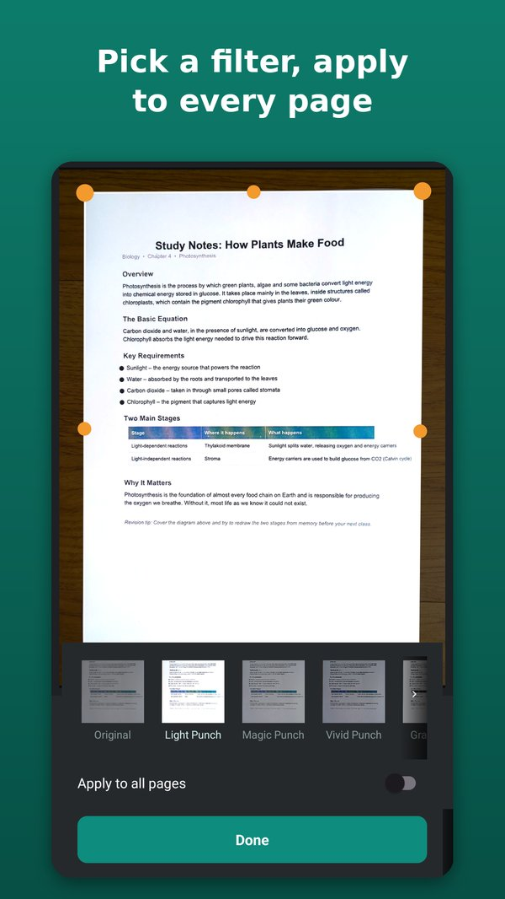
Pick a look, apply it to every page
Go from the untouched original to crisp, high-contrast text with one tap, on a single page or the whole document at once. The original is always kept, so you can switch filters back whenever you like.
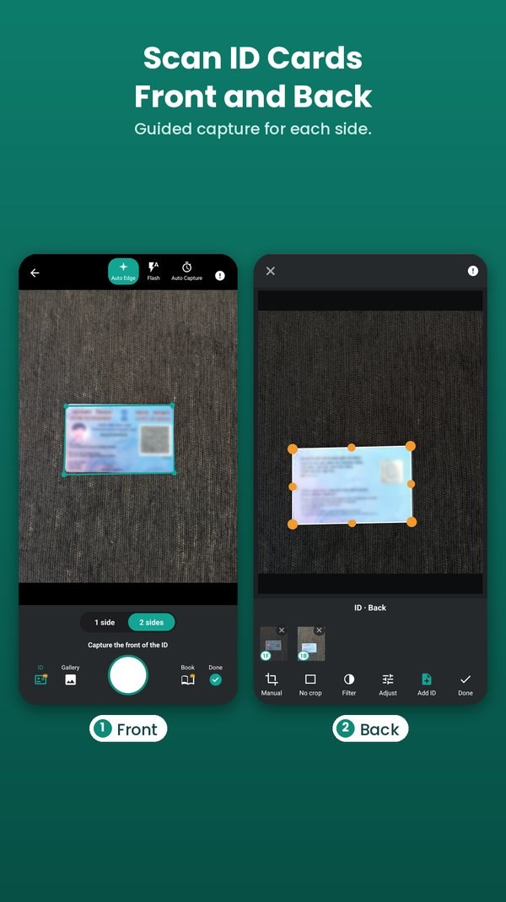
Scan ID cards, front and back
Guided capture for each side, then both sides are placed on one A4 page at real card size — ready to print or submit.
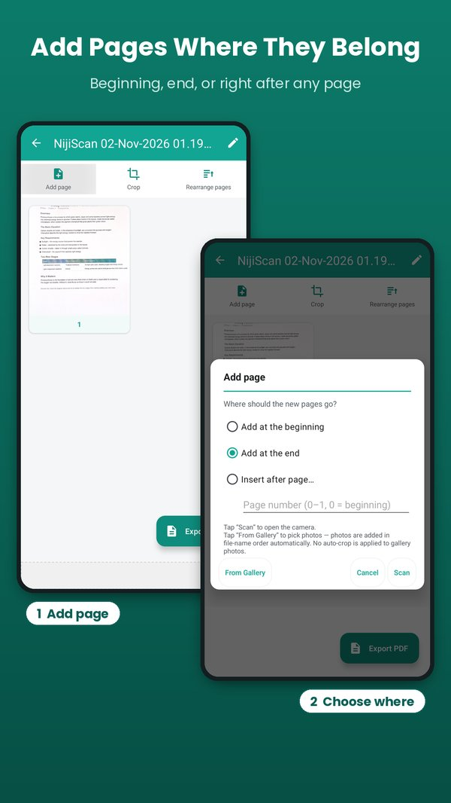
Add pages exactly where they belong
Most scanner apps tack new pages onto the end of a document and leave you to drag them into place afterward. NijiScan asks first — add new pages at the beginning, the end, or right after any specific page — so you're not immediately reordering what you just added.
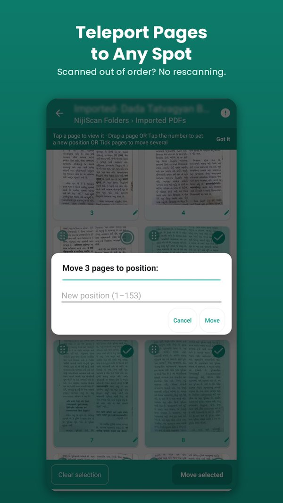
The fastest page reordering you'll use
Missed scanning in sequence, or just wish a page would teleport instead of getting dragged there? Drag-and-drop handles the small shuffles — nudge a page up or down, move a few at once. For the long hauls, Quick Reorder lets you select any page (or a handful) and send them straight to an exact position — beginning, end, or anywhere between — instantly.
Dragging page 100 all the way to page 1 by hand feels like a road trip. Quick Reorder skips straight to the flight.
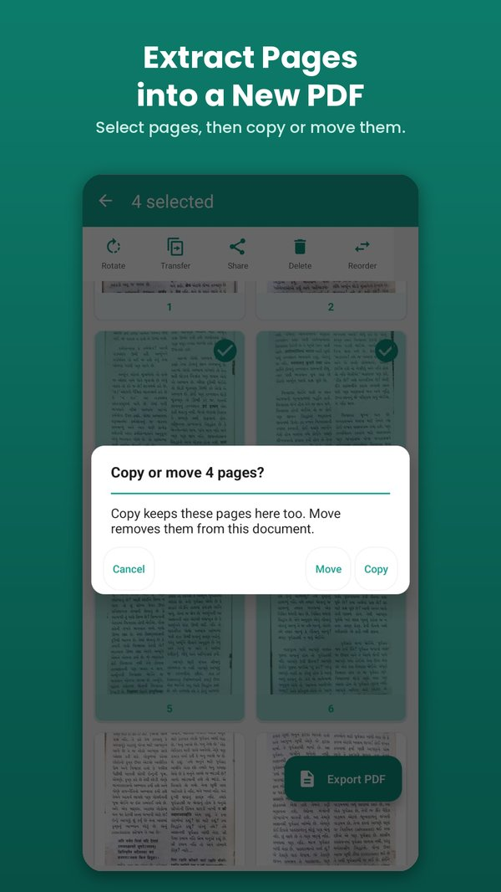
Pull pages out into their own document
Select the pages you need and copy or move them into a new document or an existing one. Pages from text PDFs that you haven't edited keep their selectable text.
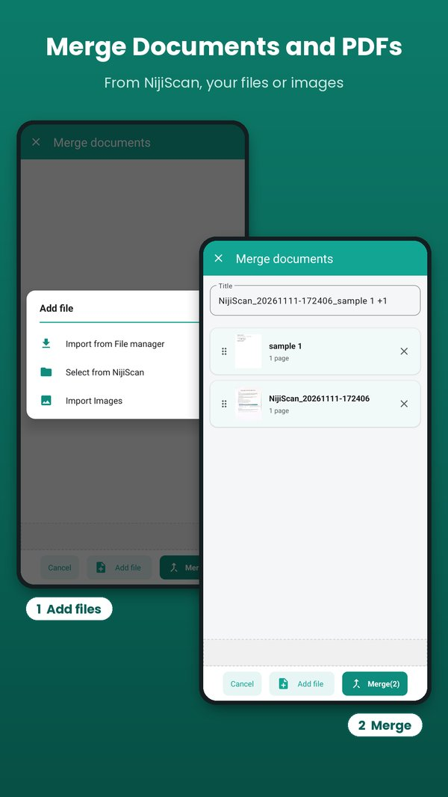
Merge documents together
Scanned something across two sessions, or need to combine a few separate documents into one file? Merge pulls them together into a single document — any PDF already on your phone works too, not just ones scanned here — without needing another app. Pages from text PDFs that you haven't edited keep their selectable text in the result.
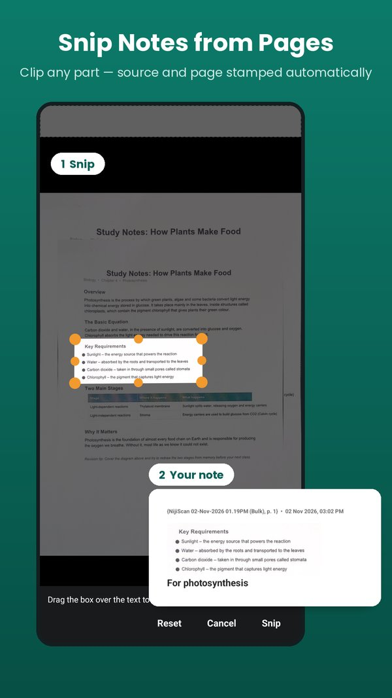
Pull pieces into one note
Snip to Note cuts a piece out of any PDF or photo and drops it into a note alongside pieces from elsewhere — each one automatically stamped with where it came from (source, page, time), so you're not left guessing later.
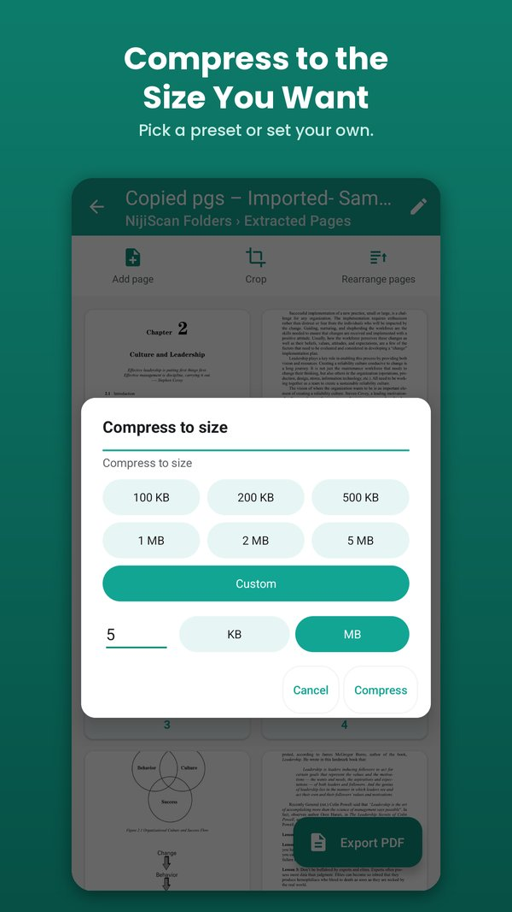
Compress to the size you actually need
Need a document small enough to email or upload to a form with a size limit? Pick a target size and NijiScan works out a quality level to get you there, rather than leaving you to guess.
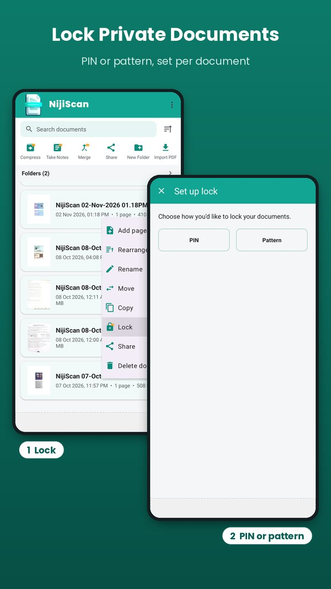
Lock documents that shouldn't be one tap away
Some scans — IDs, medical reports, financial paperwork — aren't meant to be visible to anyone who picks up your phone. Lock a document and it stays out of reach until you unlock it.
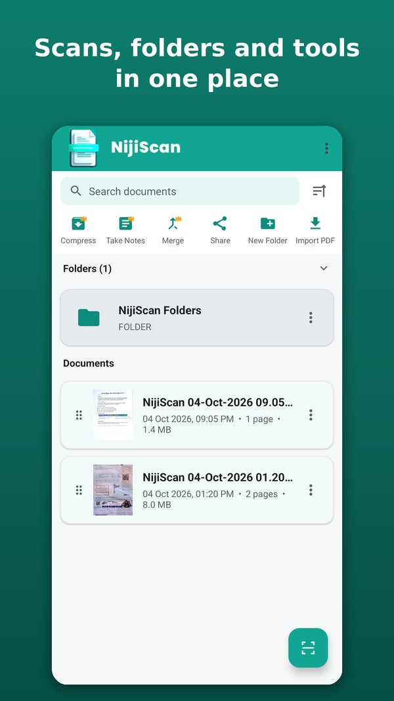
Keep it all organized, on your phone
Folders, search, and a plain document list — nothing fancier than it needs to be. Everything you scan stays stored locally, so there's no account to set up and nothing waiting on a server somewhere else.
Privacy
Your documents stay yours
No account, no cloud sync, no analytics pipeline collecting what you scan. The processing happens on your device because there's no server-side part of NijiScan for it to go through.
No cloud upload
Scanning, cropping, and exporting all happen locally. Your pages never leave your phone to get processed.
No account required
There's nothing to sign up for and nothing tied to an email or phone number to use the app.
Lock sensitive documents
Keep specific documents hidden behind a lock screen within the app, separate from your phone's own lock.
About the ads
Ads in the free version come from Google AdMob, which uses device identifiers as described in our Privacy Policy. Your documents are never part of that.
You control the files
Export, share or delete documents whenever you want — there's no remote copy to also go clean up.
Pricing
Free with ads, or pay once for everything
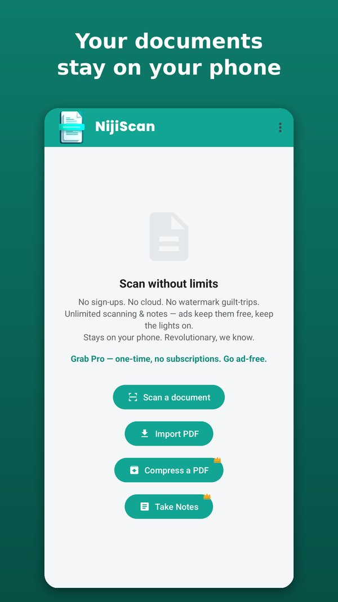
NijiScan is free to use, supported by ads. Every feature is open for your first 3 days. After that, the extra tools (Notes, Compress, Merge, Lock, password-protected PDFs, ID card scans after the first 5, and Book mode beyond 50 pages in one session) unlock for an hour at a time when you watch a short ad. Pro is a single one-time purchase that removes ads and unlocks everything permanently. It's not a subscription, and not a recurring charge you have to remember to cancel.
Free
- Unlimited scanning, cropping, filters and export
- Organize, rearrange, add and extract pages
- Everything open for the first 3 days
- Extra tools unlock for an hour per short ad
- Supported by ads
Pro
- Ads removed
- Every tool unlocked permanently
- Pay once, no renewal
- Restores on reinstall or a new phone with the same Google account
- Helps fund continued development
No watermarks on exported documents, on Free or Pro.
Publisher
App & publisher details
- App name
- NijiScan
- Developer
- Vipulkumar Dalpatsang Gohil
- Publisher name
- MGB Studio
- Platform
- Android (Google Play)
- Package name
- com.nijiscan.app
- Contact
- nijiscan@gmail.com